Transformer原文笔记
Transformer原文笔记
Transformer中Self-Attention以及Multi-Head Attention详解_哔哩哔哩_bilibili
详解Transformer中Self-Attention以及Multi-Head Attention_transformer multi head-CSDN博客
Transformer论文逐段精读【论文精读】_哔哩哔哩_bilibili
摘要
主要序列转导模型基于复杂的循环或卷积神经网络，包括编码器和解码器。性能最好的模型还通过注意力机制连接编码器和解码器。我们提出了一种新的简单网络架构——Transformer，它完全基于注意力机制，完全不需要递归和卷积。对两个机器翻译任务的实验表明，这些模型具有卓越的质量，同时具有更高的并行性，并且需要的训练时间显着减少。我们的模型在 WMT 2014 英德翻译任务中获得了 28.4 BLEU，比现有的最佳结果（包括集成）提高了 2 BLEU 以上。在 WMT 2014 英法翻译任务中，我们的模型在8个GPU上训练3.5天后，建立了新的单模型最先进 BLEU分数41.8，这只是最佳模型训练成本的一小部分文献中的模型。我们通过将 Transformer 成功应用于具有大量和有限训练数据的英语选区解析，证明 Transformer 可以很好地推广到其他任务。
总结：
- Transformer，完全基于注意力机制，完全不需要递归和卷积。具有卓越的质量，同时具有更高的并行性，并且需要的训练时间显着减少。
1 介绍
循环神经网络，特别是长短期记忆（LSTM) 和门控循环 (gRNN）神经网络，已被牢固地确立为序列建模和转导问题（例如语言建模和机器翻译）中最先进的方法。此后，人们做出了许多努力，不断突破循环语言模型和编码器-解码器架构的界限。
循环模型通常会沿着输入和输出序列的符号位置进行计算。将位置与计算时间中的步骤对齐，它们生成一系列隐藏状态 ，作为由先前隐藏状态 和位置 t 输入得到的函数。这种固有的顺序性质阻碍了训练示例中的并行化（必须等计算完），这在较长的序列长度上变得至关重要，因为内存限制限制了示例之间的批处理（就是并行处理）。最近的工作通过分解技巧和条件计算显着提高了计算效率，同时还提高了后者的模型性能。然而，顺序计算的基本限制仍然存在。
注意力机制已经成为各种任务中引人注目的序列建模和转导模型的一个组成部分，允许对依赖关系进行建模，而不考虑它们在输入或输出序列中的距离。然而，除了少数情况外，这种注意力机制都是与循环网络结合使用的。
在这项工作中，我们提出了 Transformer，这是一种避免重复的模型架构，而是完全依赖注意力机制来绘制输入和输出之间的全局依赖关系。Transformer允许显着提高并行度，并且在8个P100 GPU上进行短短12小时的训练后，可以在翻译质量方面达到新的水平。
总结：
- 顺序计算限制了并行处理的能力，完全利用注意力机制可以提高并行度
2 背景
(Vaswani 等, 2023, p. 2) 减少顺序计算的目标也构成了扩展神经 GPU 、ByteNet和 ConvS2S的基础，所有这些都使用卷积神经网络作为基本构建块，并行计算所有输入和的隐藏表示以及输出位置。在这些模型中，关联来自两个任意输入或输出位置的信号所需的操作数量随着位置之间的距离而增加，对于 ConvS2S 呈线性增长，对于 ByteNet 呈对数增长。这使得学习遥远位置之间的依赖关系变得更加困难。在 Transformer 中，这被减少到恒定数量的操作，尽管由于平均注意力位置加权而导致有效分辨率降低，我们用多头注意力（模拟卷积神经网络多输出通道的效果）来抵消这种影响，如第 3.2 节所述。
自注意力(有时称为内部注意力)是一种将单个序列的不同位置相关联的注意力机制，以便计算序列的表示。自注意力已成功应用于各种任务，包括阅读理解、抽象概括、文本蕴涵和学习与任务无关的句子表示。
端到端记忆网络基于循环注意机制而不是序列对齐循环，并且已被证明在简单语言问答和语言建模任务上表现良好。
然而，据我们所知，Transformer 是第一个完全依赖自注意力来计算其输入和输出表示而不使用序列对齐 RNN 或卷积的转换模型。在接下来的章节中，我们将描述 Transformer，self-attention并讨论其相对于其他模型的优势。
3 模型架构
大多数竞争性神经序列转导模型都具有编码器-解码器结构。这里，编码器将符号表示的输入序列映射到连续表示序列 。是的向量表示。给定z，解码器然后每次生成一个元素的符号输出序列。在每个步骤中，模型都是自回归的，在生成下一个时将先前生成的符号用作附加输入。
总结:
- 注意n和m是不同的，解码器是一个一个生成的，而编码器则可以一次看清整个句子。
- 解码器的outputs实际在下一个解码器的输入中，解码器在做预测的时候是没有输入的，它实际上是解码器在之前一些时刻的输出。
- 自回归：下一个输入包括现在得到的的输出
Transformer 遵循这一整体架构，对编码器和解码器使用堆叠自注意力和逐点、全连接层，分别如图1的左半部分-编码器和右半部分-解码器所示。
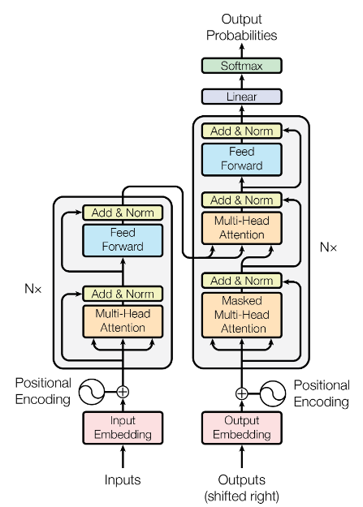
3.1 编码器和解码器堆栈
编码器：编码器由N = 6个相同层的堆栈组成。每层有两个子层。第一个是多头自注意力机制（Multi-Head Attention)，第二个是简单的位置全连接前馈网络(Feed Forward，其实就是mlp）。我们在两个子层周围采用残差连接（Add & Norm），然后进行层归一化。即每个子层的输出为LayerNorm(x + Sublayer(x))，其中Sublayer(x)是子层本身实现的函数。为了促进这些残差连接（残差连接要维度相同），模型中的所有子层以及嵌入层都会生成维度 的输出。
解码器：解码器也是由 N = 6 个相同层的堆栈组成。除了每个编码器层中的两个子层之外，解码器还插入第三个子层（掩码多头注意力机制Masked Multi-head attention），该子层对编码器堆栈的输出执行多头注意力。与编码器类似，我们在每个子层周围采用残差连接，然后进行层归一化。我们还修改了解码器堆栈中的自注意力子层，以防止预测t位置关注后续位置（在解码器训练时，在预测t时刻的输出时，不应该看到t时刻之后的输入，在注意力机制能它每一次能看到整个完整的输入）。这种掩蔽与输出嵌入偏移一个位置的事实相结合，确保位置i的预测只能依赖于小于i的位置处的已知输出。
考虑最简单二维输入的情况，每一行是一个样本，每一列是一个特征：
batchnorm：每一次把每一个特征在一个小的mini-batch（特征所指的列向量）里面把均值变成0，方差变为1，具体操作就是减去均值然后除以方差，训练的时候是小批量，预测的时候会把全局均值算出来，batchnrom还可以学习两个参数使得可以将其放缩成任意均值任意方差的向量。
layernorm：每一个样本（行向量）变成均值为0，方差为1。
为什么Transformer用layernorm：
在RNN或者Transformer中输入是三维（batches：多少句话，seq：一句话多少个词，feature（d）：词的特征或者词所表示的向量）。对于时序序列，每一个batch它的长度可能是不一样的（缺的补0）
batchnorm对每个特征操作（垂直蓝色平面），batchnorm在句子长度变化较大的情况下它的抖动相对较大，因为在做预测示要全局均值和方差，在预测时如果遇上了一个很长的句子，那么之前在训练过程中没遇到这么长的句子，在预测时效果不是那么好。
layernorm对batch操作（水平黄色平面）。layernorm中每个样本算自身的均值和方差，因而也不用存全局均值和方差，不管样本长还是短，layernorm相对稳定。
所以变长应用不使用batchnorm！！
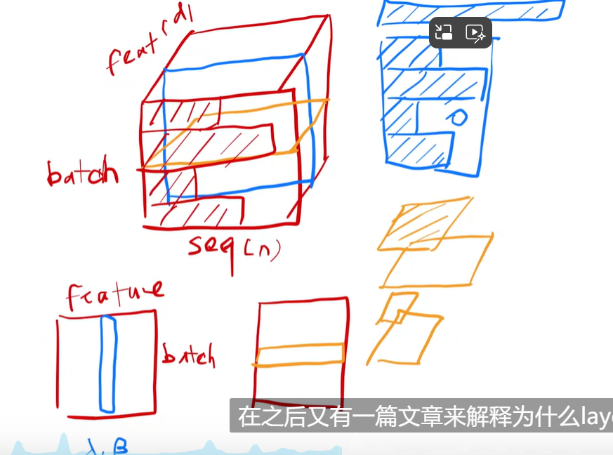
3.2 注意力机制
注意力函数可以描述为将查询和一组键值对映射到输出，其中查询Q、键K、值V和输出都是向量。output是Value的加权和所以输出的维度和value是一样的。其中分配给每个值（value）的权重是通过查询与相应键的兼容性函数（相似度，不同的注意力机制由不同的算法）计算的。
举例：给定三个V，三个K，有一个query离第一个K比较近，输出是三个V相加，但是第一个V的权重会大一些(可以理解为value是分数，query表示你更想看谁的分数）
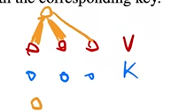
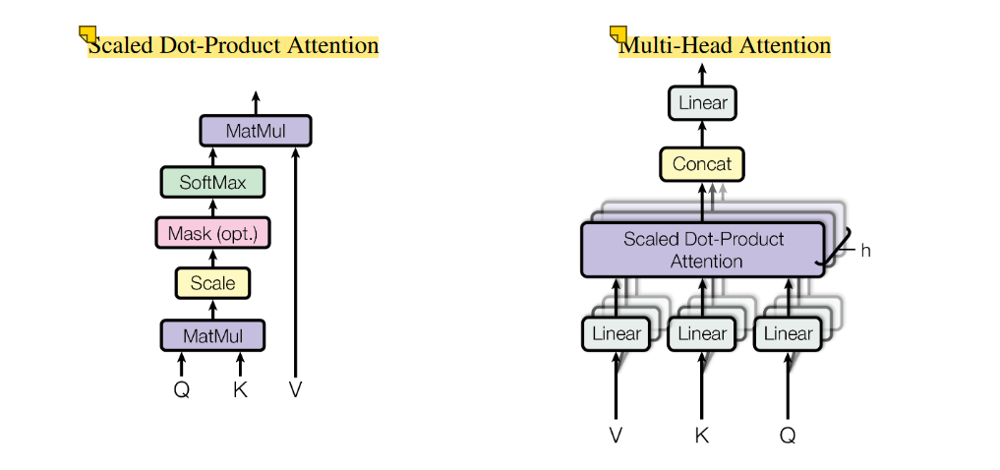
左图：
MatMul:矩阵乘法
Scale：除以，
Mask:为了避免在t时间看到t时间之后的东西。假设Q,K长度相同都为n，且时间上是能对应起来的，那么对于t时刻，做计算时应该看到，但是在注意力机制中是能从看到的，其实计算的时候可以全部都算，只要保证输出的时候不要用到到即可，具体操作是把与之后计算的那些值换成一个很大的负数，即负的很多次方：，这样在softmax取对数之后它会变成0，保证了t时刻的Q只能看到1到t-1时刻的K-V对。之后做SoftMax，之后再跟V做矩阵乘法。
右图：
QKV先经过一个线性层投影（就是卷积）到较低的维度，Scale Dot-Product Attention就是左图整个部分，做h次会有h个输出，之后把输出concat（合并到一起）最后经过一个线性层输出。（之所以要这么做是因为左图没有什么能够学习到的参数，有时候为了学习不一样的模式，希望有一些不一样的计算像素的办法，右图通过线性层投影或者说卷积能够学习卷积核的参数w，希望能够学习到不一样的投影方法，使得投影进去的度量函数里面能够匹配它需要的一些相似函数）
3.2.1 Scaled Dot-Product Attention（点乘注意力机制）
我们将我们的特别注意力机制称为“缩放点积注意力”（图 2）。输入由维度 的查询q和键k以及维度 的值v组成(故输出的维度也是）。我们使用所有键k和查询q的点积（内积）来计算相似度，将每个键除以（防止内积过大），然后应用softmax函数来获取值的权重。
在实践中，我们同时计算一组查询的注意力函数，将其打包到矩阵Q中。键和值也打包到矩阵K和V中。我们将输出矩阵计算为：
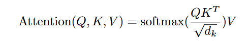
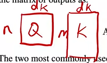
是一个n*m矩阵，softmax对矩阵的每一行做softxmax，V是m行列的矩阵，输出是
两种最常用的注意力函数是加性注意力和点积（乘法）注意力。除了缩放因子之外，点积注意力与我们的算法相同。加性注意力使用具有单个隐藏层的前馈网络来计算兼容性函数（相似度）。虽然两者在理论复杂性上相似，但点积注意力在实践中更快、更节省空间，因为它可以使用高度优化的矩阵乘法代码来实现。
除以的原因:虽然对于较小的值，两种机制的表现相似，但dk比较大时，加性注意力优于点积注意力，若不对较大的值进行缩放。我们怀疑，对于较大的值，点积的幅度会变大，从而将 softmax函数推入梯度极小的区域 。为了抵消这种影响，我们将点积缩放。
解释：
向量长度比较长时,点积的值会比较大，会导致点积比较大的值在softmax后更加靠近于1，剩下的更加靠近于0，差距比较大，会导致算梯度时梯度比较小，因为softmax希望置信的更靠近1，不置信的更靠近0，这样导致初始的时候就接近了收敛的情况，使得梯度较小。
举例：
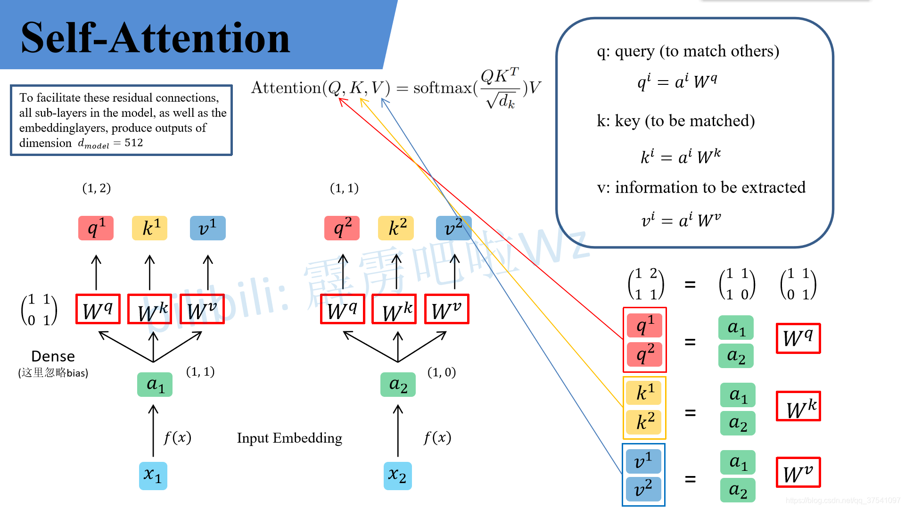
假设输入的序列长度为2，输入就两个节点x1 , x2，然后通过Input Embedding（Embedding层即嵌入层，它是可以理解为一种通过矩阵乘法对数据进行升维或者降维的层，也就是把token embedding成向量）也就是图中的f (x)将输入映射到, 。紧接着, 将分别通过三个变换矩阵, , （这三个参数是可训练的，对于所有的a是共享的）得到对应的,,（, , 在源码中是直接使用全连接层实现的，这里为了方便理解，忽略偏置）。
其中
q代表query，后续会去和每一个k进行匹配
k代表key，后续会被每个q匹配
v代表从a中提取得到的信息
后续q和k匹配的过程可以理解成计算两者的相关性，相关性越大对应v的权重也就越大
为了方便理解，这里假设了,从而通过矩阵乘法得到。Transformer是可以并行化的，所以将, 拼接起来可以得到拼接起来的,。原论文中的Q,K,V同理。
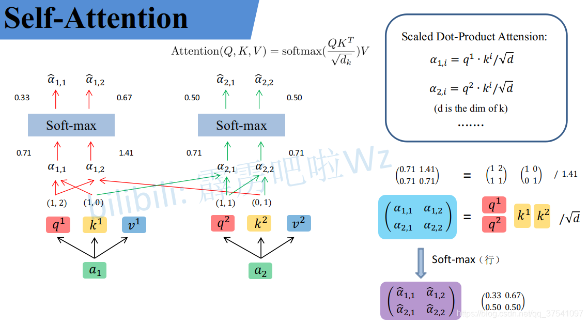
接着先拿q和每个k进行match，即点乘（注意是点乘）操作，接着除以得到对应的α，其中代表向量的长度，在本示例中等于2，除以的原因在论文中的解释是“进行点乘后的数值很大，导致通过softmax后梯度变的很小”，所以通过除以来进行缩放。softmax之后乘上V矩阵：
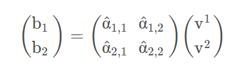
从而实现了Attention（Q,K,V），见图片右下角。
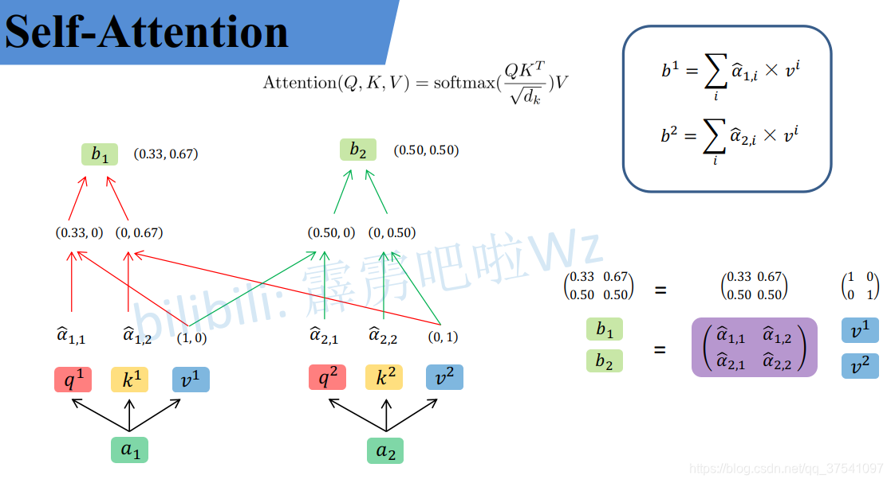
3.2.2 Multi-Head Attention
我们发现，使用不同的学习线性投影将查询、键和值分别线性投影到、和维度 h 次是有益的，而不是使用维度的键、值和查询执行单个注意力函数。然后，我们对查询、键和值的每个投影版本并行执行注意力函数，产生维输出值。将它们连接并再次投影，得到最终值，如图2所示。
与其做单个的注意力函数，不如把QKV投影到低维h次，然后再做h次的注意力函数，每一个函数的输出并在一起，再投影回来得到我们最终的输出
多头注意力允许模型共同关注来自不同位置的不同表示子空间的信息。对于单一注意力头，平均会抑制这种情况。
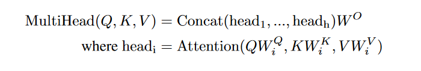
其中投影是参数矩阵 、、和 。
在这项工作中，我们采用 h = 8 个并行注意力层或头。对于每一个，我们使用 = = = 64。由于每个头的维度减少，总计算成本与全维度的单头注意力相似。
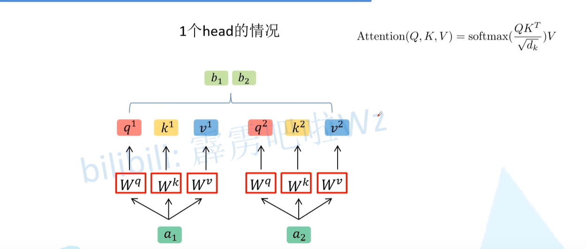
实际使用中基本使用的还是Multi-Head Attention模块。原论文中说使用多头注意力机制能够联合来自不同head部分学习到的信息。
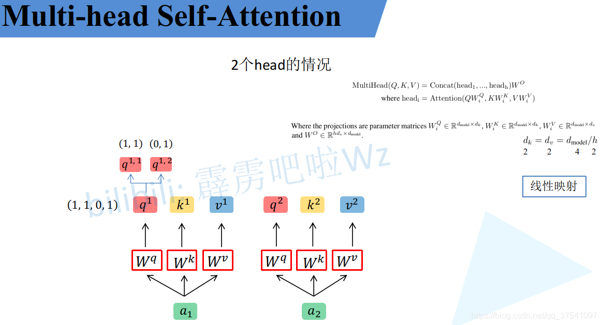
首先还是和Self-Attention模块一样将分别通过 , , 得到对应的,,，然后再根据使用的head的数目h进一步把得到的,,均分成h份。比如下图中假设h = 2 然后拆分成和那么就属于head1，属于head2。论文中是通过 , , 映射得到每个head的,,，而源码中就是均分，也可以将其设置为对应值来实现均分。
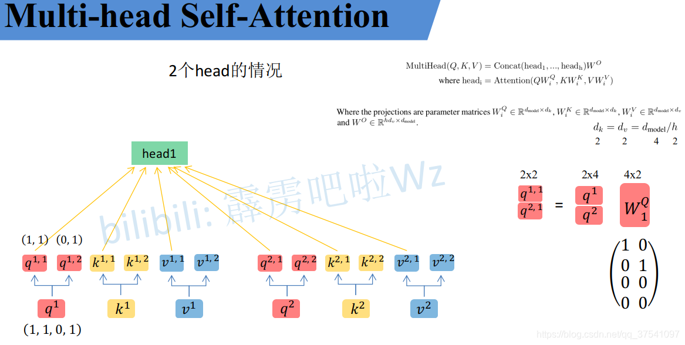
图中qkv的第二个上标为i的组成headi，分别进行self attention操作得到结果。
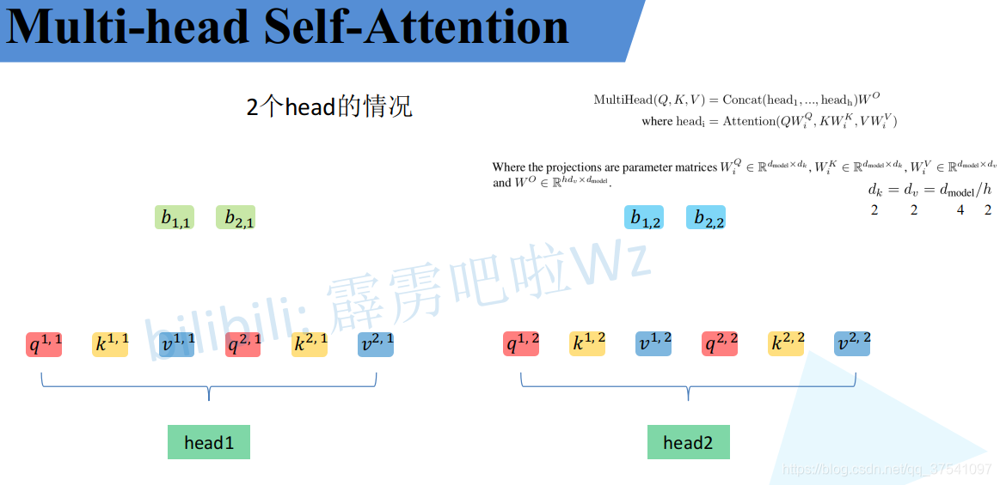
接着将每个head得到的结果进行concat拼接
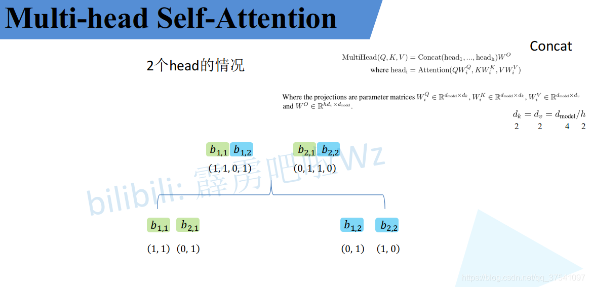
之后经过矩阵得到最终Multihead(Q,K,V)。注意的大小要保证输入输出Multihead的向量长度不变。
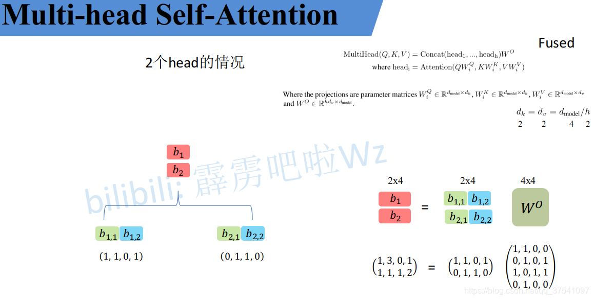
3.2.3 Applications of Attention in our Model
Transformer 以三种不同的方式使用多头注意力：
• 在"编码器-解码器注意力"层中，查询Q来自前一个解码器层，内存键和值来自编码器的输出。这允许解码器中的每个位置都参与输入序列中的所有位置。这模仿了序列到序列模型中典型的编码器-解码器注意机制。
假如输入的是一个句子有n个词，批量大小为1，实际输入编码器的是n个长度为d的向量，输入多头注意力层的从左到右是K，V，Q，一根线分为三个意思是同样一个输入它即作为K，也作为V，也作为Q，故称为自注意力机制，也就是说KVQ就是自己本身。一个向量就是一个query，每个query会得到一个输出，输入输出维度都为d相同，输出也是n个长为d的向量。输出是value的加权和，权重是query和key的相似度。所以说输出是输入的加权和，不同的输入向量计算相似度，它跟自己算相似度最大。以上是不考虑多头和有投影的情况，如果有多头和投影，这里会学习h个不一样的距离空间出来
• 编码器包含自注意力层。在自注意力层中，所有键、值和查询都来自同一位置，在本例中是编码器中前一层的输出。编码器中的每个位置可以关注编码器上一层中的所有位置。
• 解码器中的自注意力层允许解码器中的每个位置关注解码器中直到并包括该位置的所有位置。我们需要防止解码器中的左向信息流以保留自回归属性。我们通过屏蔽（设置为−∞）softmax 输入中与非法连接相对应的所有值来实现缩放点积注意力的内部。参见图 2。
解码器和编码器的区别在于输入维度m可能与编码器中输入维度n不一样。注意图2右侧上面的注意力子层，它不再是自注意力，它的KV来自于编码器的输出（n个长为d的向量，Q来自解码器下一个attention的输入（m个长为d的向量），这时候输出的权重取决于解码器输出的query和编码器输出的key的相似度。就是说根据编码器的输出，通过query把想要的一部分的东西拎出来
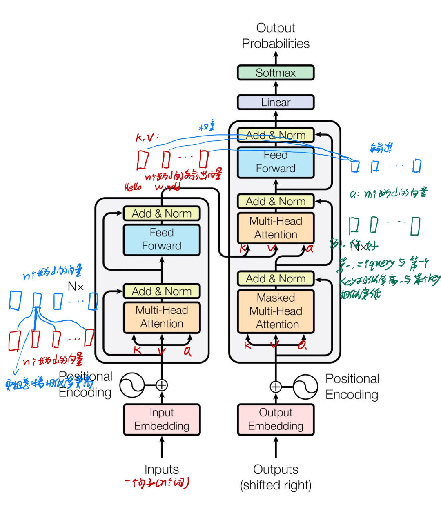
图中的input与ouputembedding就是token embedding，再将其与positional encoding相加
3.3 位置式前馈网络（就是MLP）
除了注意力子层之外，我们的编码器和解码器中的每个层都包含一个完全连接的前馈网络，该网络单独且相同地应用于每个token。这由两个线性变换组成，中间有一个 ReLU 激活。
输入是句子，它是一个序列，有很多个词，一个词就是一个token，意思就是把每一个词都用MLP作用一遍，这个MLP是相同的。相当于把MLP作用在最后一个维度。下图公式就是线性层加Relu之后再加了一个线性层，x是维度为512的向量，把它扩成2048的维度，因为有残差连接又要投影回去，把2048又降为了512
虽然线性变换在不同位置上是相同的，但它们在层与层之间使用不同的参数。另一种描述方式是内核大小为1的两个卷积。输入和输出的维度为 ，内层的维度为 。
考虑最简单情况：没有残差连接，没有layernorm，单头attention，没有投影
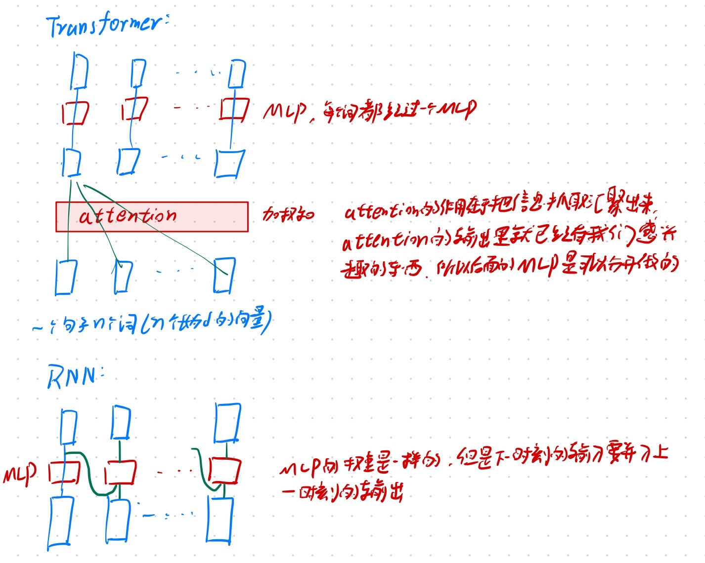
3.4 嵌入和Softmax
与其他序列转导模型类似，我们使用学习嵌入将输入token和输出token转换为维度 的向量。我们还使用通常学习的线性变换和 softmax 函数将解码器输出转换为下一个token的预测概率。在我们的模型中，我们在两个嵌入层和 pre-softmax 线性变换之间共享相同的权重矩阵（embedding层权重一样）。在嵌入层中，我们将这些权重乘以
在学embeding时，多多少少会把每个向量的长度学成相对来说比较小，比如1，无论维度多大都会学成1，维度越大学到的权重值越小，之后加上位置编码。它不会随着你的长度变长把你的长度固定住，这样使得加上位置编码时在scale上差不多。
3.5 位置编码
由于我们的模型不包含递归和卷积，为了使模型能够利用序列的顺序，我们必须注入一些有关序列中标记的相对或绝对位置的信息。为此，我们将“位置编码”添加到编码器和解码器堆栈底部的输入嵌入中。位置编码与嵌入具有相同的维度 ，因此可以将两者相加。位置编码有多种选择，有学习的和固定的。
位置编码见：一文通透位置编码：从标准位置编码、旋转位置编码RoPE到ALiBi、LLaMA 2 Long(含NTK-aware简介)-CSDN博客
attention是没有时序信息的，输出是加权和，权重是query和key之间的距离，与序列信息无关，这意味着给了一句话把顺序任意打乱，attention之后出来的结果是一样的，所以要把时序信息加进来，就是把词的位置i加到embedding里面去。词的维度是512，我们也用一个维度512的向量来表示词的位置。不论怎么打乱相加后的向量，经过attention后的值都不变，它已经把时序信息揉进向量的值里面了
在这项工作中，我们使用不同频率的正弦和余弦函数：
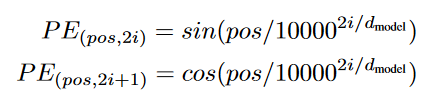
其中 pos 是位置，i 是尺寸。也就是说，位置编码的每个维度对应于正弦曲线。波长形成从 2π 到 10000·2π 的几何级数。我们选择这个函数是因为我们假设它可以让模型轻松学习关注的相对位置，因为对于任何固定偏移 k， 可以表示为PE的线性函数。
我们还尝试使用学习的位置嵌入，发现这两个版本产生几乎相同的结果（参见表 3 行 (E)）。我们选择正弦版本，因为它可以允许模型推断出比训练期间遇到的序列长度更长的序列长度。
如果仔细观察刚刚讲的Self-Attention和Multi-Head Attention模块，在计算中是没有考虑到位置信息的。假设在Self-Attention模块中，输入a1，a2，a3得到b1，b2，b3。对于a1而言，a2和a3离它一样近且没有先后顺序，假设将输入的顺序改为a1，a2，a3，对结果b1没有任何影响。
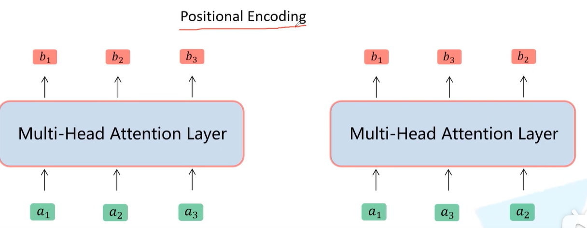
因此，在上加入位置编码，即pe={，，… ,} ，a={，，… ,}，pe与a有相同的维度大小。关于位置编码在原论文中有提出两种方案，一种是原论文中使用的固定编码，即论文中给出的sine and cosine functions方法，按照该方法可计算出位置编码；另一种是可训练的位置编码，作者说尝试了两种方法发现结果差不多。
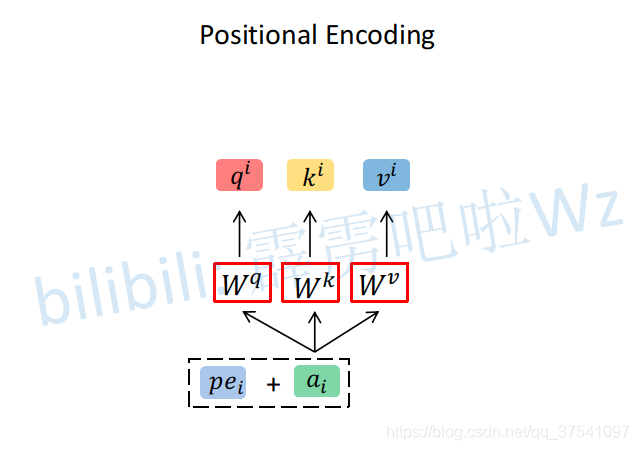
4 为什么自注意力机制
在本节中，我们将自注意力层的各个方面与循环层和卷积层进行比较，这些层通常用于将符号表示的一个可变长度序列（，，… ,）映射到另一个等长度序列（，，… ,)，其中 ，（n为序列长度，d为向量长度），例如典型序列转导编码器或解码器中的隐藏层。为了激发我们使用自我注意力，我们考虑了三个需求。
一是每层的总计算复杂度。另一个是可以并行化的计算量，以所需的最小顺序操作数来衡量。
顺序计算越少越好，顺序计算是指下一步计算要等前面多少步计算完成，越不要等代表并行度越高
第三个是网络中远程依赖之间的路径长度（信息从一个数据点走到另外一个数据点要走多远，也是越短越好）。学习远程依赖性是许多序列转导任务中的一个关键挑战。影响学习这种依赖性的能力的一个关键因素是前向和后向信号在网络中必须经过的路径的长度。输入和输出序列中的任意位置组合之间的路径越短，学习远程依赖关系就越容易。因此，我们还比较了由不同层类型组成的网络中任意两个输入和输出位置之间的最大路径长度。
如表1所示，自注意力层通过恒定数量的顺序执行操作连接所有位置，而循环层需要 O(n) 顺序操作。就计算复杂度而言，当序列长度 n小于表示维度d时，自注意力层比循环层更快。这种情况最常见于机器翻译中最先进模型所使用的句子表示，例如单词片段和字节对的表示。为了提高涉及很长序列的任务的计算性能，自注意力可以限制为仅考虑输入0序列中以相应输出位置为中心的大小为 r 的邻域。这会将最大路径长度增加到 O(n/r)。我们计划在未来的工作中进一步研究这种方法。
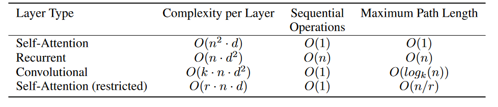
自注意力：K,Q都是n，得到的矩阵中一个元素d次乘法，一共个元素。故自注意力是的复杂度，矩阵计算可以认为并行度比较高，故并行计算量为1，attention里面一个query可以跟所有key做计算，输出是所有value的加权和，故任何query和任何一个很远的key-value对只需要一次计算就可以得到，故长度为1。
RNN：计算n次复杂度为，后面两项很明显，所以说RNN对长序列的效果不太好
CNN：在序列上用的是1d的卷积，故它的卷积核大小就是k（一般是3，5，不大，可认为是常数），n是长度，d是输入输出通道的维数，卷积在k长度的窗口内可以一次性传递信息，若为n长度大于k的话就要取log。
限制的自注意力：是指query只跟最近的r个邻居去做计算，这样会导致比较远的点要多进行几次运算才能传递信息
内核宽度k<n的单个卷积层不会连接所有输入和输出位置对。这样做需要在连续卷积核的情况下要求一堆 O(n/k) 卷积层，或者在扩张卷积的情况下需要 ，从而在网络中增加任意两个位置之间最长路径的长度。卷积层通常比循环层贵k倍。然而，可分离卷积大大降低了复杂性，达到。然而，即使k=n，可分离卷积的复杂度也等于自注意力层和逐点前馈层的组合，这是我们在模型中采用的方法。
作为附带好处，自注意力可以产生更多可解释的模型。我们检查模型中的注意力分布，并在附录中展示和讨论示例。个体注意力头不仅清楚地学习执行不同的任务，而且许多注意力头似乎表现出与句子的句法和语义结构相关的行为。
5 训练
本节描述我们模型的训练制度。
5.1 训练数据和批处理
我们使用标准WMT2014英语-德语数据集进行训练，该数据集包含约450万个句子对。句子使用bpe进行编码，该编码具有约37000个token的共享源目标词汇表。对于英语-法语，我们使用了更大的 WMT2014英语-法语数据集，其中包含3600万个句子，并将标记拆分为32000个单词片段词汇表。句子对按大致序列长度分批在一起。每个训练批次包含一组句子对，其中包含大约25000个源token和25000个目标token。
bpe：提取词根的方法，如果词有后缀ing，en，ed等等都算成不同的token，会导致token种类很多
共享源目标词汇表：英语德语是共享的，即不再对两种语言都构造一个字典，好处在于编码器和解码器的embedding可以用同一个字典
5.2 硬件和时间表
我们在一台配备8个NVIDIA P100 GPU 的机器上训练我们的模型。对于我们使用的整篇论文中描述的超参数的基本模型，每个训练步骤大约需要0.4秒。我们对基础模型进行了总计100,000步或12小时的训练。对于我们的大型模型（如表 3 的底线所述），一个batch训练·时间1.0秒。大模型接受了300,000步（3.5 天）的训练。
5.3 优化器
我们使用 Adam 优化器，其中 = 0.9、 = 0.98 和 。我们根据以下公式在训练过程中改变学习率：
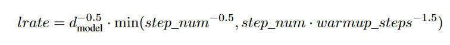
这对应于第一个Warmup_steps训练步骤的学习率线性增加，然后与步骤数的平方根倒数成比例地减少。我们使用了warmup_steps=4000。
5.4 正则化
我们在训练期间采用三种类型的正则化：
残差 Dropout我们将 dropout应用于每个子层的输出（在进入残差连接和layernorm之前），然后将其添加到子层输入并进行归一化。此外，我们将 dropout 应用于编码器和解码器堆栈中的嵌入和位置编码的总和。对于基本模型，我们使用 Pdrop = 0.1 的比率。
标签平滑 在训练过程中，我们采用了值 εls = 0.1 的标签平滑。这会提高模型的困惑度（模型的不确信度，），因为模型会变得更加不确定，但会提高准确性和 BLEU 分数。（就是说对于正确的那个词在softmax判断的时候置信度为0.01就行了）
6 结果
6.1 机器翻译
在 WMT 2014 英德翻译任务中，大型 Transformer 模型（表 2 中的 Transformer (big)）比之前报告的最佳模型（包括集成）的性能高出 2.0 BLEU 以上，建立了新的最佳模型艺术 BLEU 得分为 28.4。该模型的配置列于表 3 的最后一行。在 8 个 P100 GPU 上训练花费了 3.5 天。甚至我们的基础模型也超越了之前发布的所有模型和集成，而训练成本只是任何竞争模型的一小部分。
在 WMT 2014 英法翻译任务中，我们的大模型获得了 41.0 的 BLEU 分数，优于之前发布的所有单一模型，而训练成本不到之前最先进模型的 1/4模型。针对英语到法语训练的 Transformer（大）模型使用的辍学率 = 0.1，而不是 0.3。
对于基本模型，我们使用通过对最后 5 个检查点进行平均而获得的单个模型，这些检查点以 10 分钟的间隔写入。对于大型模型，我们对最后 20 个检查点进行了平均。我们使用束搜索，波束大小为 4，长度惩罚 α = 0.6。这些超参数是在开发集上进行实验后选择的。我们将推理期间的最大输出长度设置为输入长度+ 50，但尽可能提前终止。
表 2 总结了我们的结果，并将我们的翻译质量和训练成本与文献中的其他模型架构进行了比较。我们通过将训练时间、使用的 GPU 数量以及每个 GPU 5 的持续单精度浮点容量的估计相乘来估计用于训练模型的浮点运算数量。
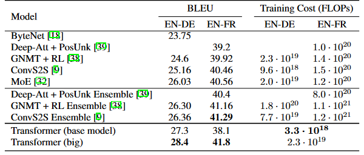
6.2 模型变化
为了评估Transformer不同组件的重要性，我们以不同的方式改变了我们的基本模型，测量了英语到德语翻译的性能变化开发集，newstest2013。我们使用了上一节中描述的波束搜索，但没有检查点平均。我们在表 3 中列出了这些结果。
在表 3 行 (A) 中，我们改变注意力头的数量以及注意力键和值维度，保持计算量恒定，如第 3.2.2 节所述。虽然单头注意力比最佳设置差 0.9 BLEU，但头数过多质量也会下降。
在表 3 行 (B) 中，我们观察到减少注意力键值大小dk会损害模型质量。这表明确定兼容性并不容易，并且比点积更复杂的兼容性函数可能是有益的。我们在©和(D)行中进一步观察到，正如预期的那样，模型越大越好，并且 dropout 对于避免过度拟合非常有帮助。在行 (E) 中，我们用学习的位置嵌入替换正弦位置编码 ，并观察到与基本模型几乎相同的结果。
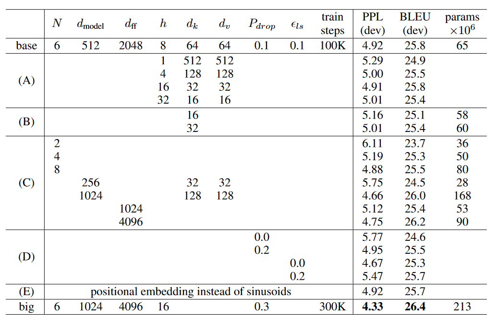
dff：MLP中间隐藏层的输出大小，train steps：epoch
看它的big模型，模型更大了于是把dropout也变大了，模型更大收敛速度也会更慢，因为学习率是变低了的，所以把epoch也变大了。
6.3 英语选区分析
为了评估 Transformer 是否可以推广到其他任务，我们对英语选区解析进行了实验。这项任务提出了具体的挑战：输出受到强大的结构约束，并且明显长于输入。此外，RNN 序列到序列模型尚未能够在小数据情况下获得最先进的结果 。
我们在 Penn Treebank的《华尔街日报》（WSJ）部分训练了一个 dmodel = 1024 的 4 层 Transformer，大约 40K 训练句子。我们还在半监督环境中对其进行了训练，使用了更大的高置信度和 BerkleyParser 语料库，其中包含大约 1700 万个句子。我们在仅《华尔街日报》设置中使用了 16K 个标记的词汇表，在半监督设置中使用了 32K 个标记的词汇表。
我们仅进行了少量实验来选择第 22 节开发集上的 dropout、注意力和残差（第 5.4 节）、学习率和波束大小，所有其他参数与英语到德语的基础翻译模型保持不变。在推理过程中，我们将最大输出长度增加到输入长度 + 300。对于仅 WSJ 和半监督设置，我们使用了 21 的波束大小和 α = 0.3。
表 4 中的结果表明，尽管缺乏特定于任务的调整，我们的模型表现出奇的好，比之前报告的所有模型（循环神经网络语法除外）产生了更好的结果。
与 RNN 序列到序列模型相比，即使仅在 WSJ 40K 句子训练集上进行训练，Transformer 的性能也优于BerkeleyParser 。
7 结论
在这项工作中，我们提出了 Transformer，这是第一个完全基于注意力的序列转换模型，用多头自注意力取代了编码器-解码器架构中最常用的循环层。
对于翻译任务，Transformer 的训练速度明显快于基于循环层或卷积层的架构。在 WMT 2014 英语-德语和 WMT 2014 英语-法语翻译任务中，我们都达到了新的最先进水平。在前一项任务中，我们最好的模型甚至优于所有先前报告的集成。
我们对纯基于注意力的模型的未来感到兴奋，并计划将其应用于其他任务。我们计划将 Transformer 扩展到涉及文本以外的输入和输出模式的问题，并研究局部的、受限的注意力机制，以有效地处理图像、音频和视频等大型输入和输出。让生成的文本不那么时序化是我们的另一个研究目标。
我们用于训练和评估模型的代码可在 https://github.com/tensorflow/tensor2tensor 上找到。
致谢：我们感谢 Nal Kalchbrenner 和 Stephan Gouws 富有成效的评论、更正和启发。